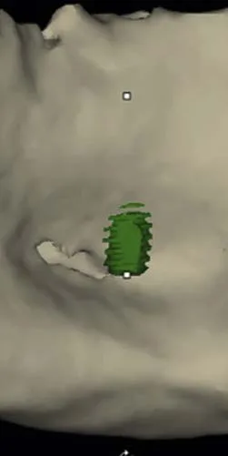

نسخه استخراجشده؛ ترجمه یا تأیید علمی انجام نشده است. وضعیت: captured
در ناحیهی زیرزبانی مندیبل، دو شریان مهم قرار دارند: شریان زیرزبانی که از شریان لینگوال منشأ میگیرد، و شریان زیرچانهای که شاخهای از شریان فاسیال است. گاهی هم آناستوموز این دو در محل حضور دارد.
سازوکار عارضه روشن و ترسناک است: مته صفحهی لینگوال ناحیهی زیرزبانی را سوراخ میکند و به یکی از این دو شریان آسیب میزند. نتیجه، خونریزی در فضای کف دهان است که بهصورت هماتوم زیرزبانی در حال گسترش بروز میکند — و راه هوایی را به خطر میاندازد.
و ناحیهی پرخطرش: این رخداد بهویژه در ناحیهی کانین گزارش شده است. یعنی همان ناحیهی قدامی مندیبل که شهرت «امن» دارد.
مقطع مندیبل قدامی شکلهای متفاوتی دارد و همهی آنها اجازهی کاشت مستقیم نمیدهند. شکلهایی مانند گلابی یا ساعتشنی (hourglass) یعنی بخش تحتانی از بخش کرستال باریکتر یا منحرفتر است — و متهای که زاویهی کرست را دنبال کند، در عمق از دیواره بیرون میزند.
در ناحیهی خلفی، فوسای سابمندیبولار مسئله را جدیتر میکند: هرچه به سمت دیستال پیش بروی، این فرورفتگی عمیقتر میشود و زاویهی کاشت باید بیشتر شود. یعنی زاویهی ثابت در طول قوس، خودش یک خطاست.
نتیجهی عملی: پیش از هر کاشت در مندیبل، شکل کامل مقطع را ببین و مسیر مته را تا انتها روی همان مقطع دنبال کن — نه فقط نقطهی ورودش را.
